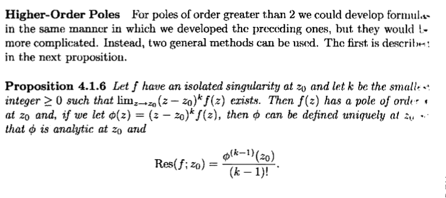

complex
equality
Given \( a + b i , c + d i \in \mathbb{C} \), they are equal when \( a = c \) and \( b = d \)
conjugate
suppose \( z = x + i y \), then the conjugate is denoted by
\( \overline{z} := x - i y \)
complex number times it's conjugate equals the modulus squared
\( z \cdot \overline{z} = \left \lvert z \right \rvert^{2} \)
suppose that \( z = x + i y \), then \( z \cdot \overline{z} = \left ( x + i y \right ) \cdot \left ( x - i y \right ) = x^{2} + y^{2} + x y i - x y i = x^{2} + y^{2} \), but then again \( \left | z \right | = \left | x + i y \right | = \sqrt{x^{2} + y^{2}} \) thus \( z \cdot \overline{z} = \left | z \right | ^{2} \)
Inverse
the inverse of a complex number \( z \in \mathbb{C} \) is another \( w \in \mathbb{C} \) such that \( z \cdot w = 1 \), we denote \( w \) by \( z^{- 1} \) or \( \frac{1}{z} \)
value of the inverse
Given \( z \in \mathbb{C} \) we have \( z^{- 1} = \frac{\overline{z}}{\left \lvert z \right \rvert^{2}} \)
We know that \( z \cdot \overline{z} = \left \lvert z \right \rvert^{2} \), therefore \( z \cdot \frac{\overline{z}}{\left \lvert z \right \rvert^{2}} = 1 \), so by the definition of inverse \( z^{- 1} = \frac{\overline{z}}{\left \lvert z \right \rvert^{2}} \) as needed.
For any \( z \in \mathbb{C} , \left \lvert \frac{z}{\overline{z}} \right \rvert = 1 \)
\( \frac{1}{\overline{z}} = \frac{\overline{\overline{z}}}{\left \lvert \overline{z} \right \rvert} \)
real part of a complex number
given \( z = x + i y \in \mathbb{C} \) we say that \( x \) is the real part of \( z \) and define the function
\( \mathcal{R} \left ( z \right ) = x \)
imaginary part of a complex number
given \( z = x + i y \in \mathbb{C} \) we say that \( y \) is the imaginary part of \( z \) and define the function
\( \mathcal{I} \left ( z \right ) = y \)
extracting the real part of a complex number
suppose \( z \in \mathbb{C} \), then \( \mathfrak{R} \left ( z \right ) = \frac{z + \overline{z}}{2} \)
modulus
for any \( z = x + i y \in \mathbb{C} \), we define
\( \left | z \right | := \sqrt{x^{2} + y^{2}} \)
\( \left | \overline{z} \right | = \left | z \right | \)
modulus is greater than it's components
for any \( z \in \mathbb{C} \) we have both
- \( \left | \mathfrak{R} \left ( z \right ) \right | \le \left | z \right | \)
- \( \left | \mathfrak{I} \left ( z \right ) \right | \le \left | z \right | \)
imaginary part distributes
\( \mathfrak{I} \left ( z + w \right ) = \mathfrak{I} \left ( z \right ) + \mathfrak{I} \left ( w \right ) \)
Modulus plus One of it's Components is Positive
Suppose that \( f \in \left \lbrace \mathcal{R} , \mathcal{I} \right \rbrace \), then
\( \left | z \right | + f\left ( z \right ) \ge 0 \)
Let \( z = x + i y \in \mathbb{C} \) then suppose without loss of generality that \( f{=} \mathcal{R} \), then
\[
- x \le \left | x \right | = \sqrt{x^{2}} \le \sqrt{x^{2} + y^{2}} = \left | x + i y \right |
\]
therefore \( 0 \le x + \left | x + i y \right | \) which means \( 0 \le \mathcal{R} \left ( z \right ) + \left | z \right | \)
creating squares
without use of the triangle inequality prove that \( \left | z - 1 \right | ^{2} = \left | z \right | ^{2} + 1 - 2 \mathcal{R} \left ( z \right ) \), then conclude that \( \left | z - 1 \right | \le \left | z \right | + 1 \)
\( \left | z - 1 \right | ^{2} \) = \( \left ( z - 1 \right ) \cdot \overline{z - 1} = \left ( z - 1 \right ) \cdot \left ( \overline{z} - 1 \right ) = z \cdot \overline{z} - z - \overline{z} + 1 \), now recall that \( \mathcal{R} \left ( z \right ) = \frac{z + \overline{z}}{2} \) so we can continue the equality with \( \left | z \right | ^{2} - 2 \mathcal{R} \left ( z \right ) + 1 \), showing the first part
for the second part, we can notice that \( \left ( \left | z \right | + 1 \right )^{2} = \left | z \right | ^{2} + 2 \left | z \right | + 1 \), so then \( \left | z - 1 \right | ^{2} = \left | z \right | ^{2} + 1 - 2 \mathcal{R} \left ( z \right ) = \left | z \right | ^{2} + 2 \left | z \right | - 2 \left | z \right | + 1 - 2 \mathcal{R} \left ( z \right ) = \left ( \left | z \right | + 1 \right )^{2} - 2 \left ( \left | z \right | + \mathcal{R} \left ( z \right ) \right ) \), then by
this proposition we can see that the last term in the previous equality chain is less than or equal to \( \left ( \left | z \right | + 1 \right )^{2} \) allowing us to conclude that \( \left | z - 1 \right | ^{2} \le \left ( \left | z \right | + 1 \right )^{2} \) which implies that \( \left | z - 1 \right | \le \left | z \right | + 1 \)
complex multiplication
given \( a + b i , c + d i \in \mathbb{C} \), then:
\( \left ( a + b i \right ) \cdot \left ( c + d i \right ) = a b + i \left ( a d + b c \right ) - d b = \left ( a d - b d \right ) + i \left ( a d + b c \right ) \)
linear fractional transformation
any function of the form \( f{\left ( z \right )} = \frac{a z + b}{c z + d} \) for \( a , b , c , d \in \mathbb{C} \) is called a linear fractional transformation
find a linear fractional transformation which maps the upper half plane to the unit disk and sends \( 1 \) to \( 1 \)
complex sin
\( \sin: \mathbb{C} \to \mathbb{C} \)
\( \sin\left ( z \right ) := \frac{e^{i z} - e^{- i z}}{2} i \)
complex cos
\( \cos: \mathbb{C} \to \mathbb{C} \)
\( \cos\left ( z \right ) := \frac{e^{i z} + e^{- i z}}{2} \)
prove the following is true or false \( - 1 \le \left | \cos{\left ( z \right )} \right | \le 1 \)
consider \( \left | \cos{\left ( z \right )} \right | = \left | \frac{e^{i z} + e^{- i z}}{2} \right | = \frac{1}{2} \cdot \left | e^{i z} + e^{- i z} \right | \le \frac{1}{2} \cdot \left ( \left | e^{i z} \right | + \left | e^{- i z} \right | \right ) \), since \( z = x + i y \) then we know \( \left | e^{i z} \right | = \left | e^{- y} \cdot e^{i x} \right | = e^{- y} \) and \( \left | e^{- i z} \right | = e^{y} \cdot e^{- i x} \) thus by we have \( \left | \cos{\left ( z \right )} \right | \le e^{- y} + e^{y} \), this might cause an issue as when \( y = 0 \) we only get the bound \( \left | \cos{\left ( z \right )} \right | \le 2 \). If we consider \( z = \ln{\left ( 4 \right )} i \) then \( \left | \cos{\left ( \ln{\left ( 4 \right )} i \right )} \right | = \frac{1}{2} \cdot \left | e^{- \ln{\left ( 4 \right )}} + e^{\ln{\left ( 4 \right )}} \right | = \frac{1}{2} \left ( \frac{1}{4} + 4 \right ) = 2 + \frac{1}{8} \gt 1 \) thus the original statement is proven false
polar form
given any \( z \in \mathbb{C} \) there are unique \( r , \theta \) such that \( z = r \left ( \cos{\left ( \theta \right )} + i \sin{\left ( \theta \right )} \right ) \)
argument of a complex number
suppose \( z \in \mathbb{C} \), then \( a r g{\left ( z \right )} \) is any value such that \( z = \left | z \right | \cdot e^{i a r g{\left ( z \right )}} \)
principal argument
We define \( A r g{\left ( z \right )} \) to be the argument of \( z \) such that \( A r g{\left ( z \right )} \in \left ( - \pi , \pi \right ] \)
complex number to the power of another
given \( z , w \in \mathbb{C} \) we say that \( z^{w} := e^{\operatorname{Log}{\left ( z \right )} \cdot w} \)
aye aye captain!
compute \( i^{i} \)
\( i^{i} = e^{\operatorname{Log}{\left ( i \right )} \cdot i} = e^{i \frac{\pi}{2} \cdot i} = \frac{1}{e^{\frac{\pi}{2}}} \)
branch of a multivalued function
the branch of a multivalued function \( f{\left ( z \right )} \) is a single valued function \( F \left ( z \right ) \) on a region \( D \subseteq C \) that coincides with \( f{\left ( z \right )} \)
principal value log
\( \operatorname{Log}{\left ( z \right )} \) is a branch of \( \log{\left ( z \right )} \) such that \( \mathfrak{I} \left ( \operatorname{Log}{\left ( z \right )} \right ) \in \left ( - \pi , \pi \right ] \)
\( \operatorname{Log}{\left ( 4 + 4 i \right )} = \operatorname{Log}{\left ( 4 \cdot \left ( 1 + i \right ) \right )} = \log{\left ( 4 \right )} + \operatorname{Log}{\left ( 1 + i \right )} = \log{\left ( 4 \right )} + \log{\left ( \sqrt{2} \right )} + i \frac{\pi}{4} = \log{\left ( 4 \cdot \sqrt{2} \right )} + i \frac{\pi}{4} \)
polar function
we can define a function \( \rho : \mathbb{R} \times \mathbb{R} \to \mathbb{C} \) as
\( \rho \left ( r , \theta \right ) = r \left ( \cos{\left ( \theta \right )} + i \sin{\left ( \theta \right )} \right ) \)
note that for any \( k \in \mathbb{Z} , \rho \left ( r , \theta + 2 \pi \cdot k \right ) = \rho \left ( r , \theta \right ) \)
polar uniqueness upto a rotation
\( \rho \left ( r , \alpha \right ) = \rho \left ( r , \beta \right ) \) if and only if \( \alpha = \beta + 2 \pi \cdot k \) for some \( k \in \mathbb{Z} \)
multiplication in polar form
given \( z = r_{z} \left ( \cos{\left ( \theta_{z} \right )} + i \sin{\left ( \theta_{z} \right )} \right ) \) and \( w = r_{w} \left ( \cos{\left ( \theta_{w} \right )} + i \sin{\left ( \theta_{w} \right )} \right ) \), then
\( z w = r_{z} \cdot r_{w} \left ( \cos{\left ( \theta_{z} + \theta_{w} \right )} + i \sin{\left ( \theta_{z} + \theta_{w} \right )} \right ) \)
open set
a set \( A \subseteq \mathbb{C} \) is said to be open if for every \( a \in A \), there is some \( \epsilon \in R^{\gt 0} \) such that \( B \left ( a , \epsilon \right ) \subseteq A \)
Show that \( \Omega := \left \lbrace z \in \mathbb{C} : \mathfrak{I} \left ( z \right ) \gt 1 \right \rbrace \) is an open set
Let \( z_{\Omega} \in \Omega \), then take \( B \left ( z_{\Omega} , \mathfrak{I} \left ( z_{\omega} \right ) - 1 \right ) \), let \( z \in B \left ( z_{\Omega} , \mathfrak{I} \left ( z_{\omega} \right ) - 1 \right ) \), now we want to prove that \( z \in \Omega \), that is that \( \mathfrak{I} \left ( z \right ) \gt 1 \)
If \( \mathfrak{I} \left ( z \right ) \ge \mathfrak{I} \left ( z_{\Omega} \right ) \), then clearly \( \mathfrak{I} \left ( z \right ) \gt 1 \), on the other hand if \( \mathfrak{I} \left ( z \right ) \lt \mathfrak{I} \left ( z_{\Omega} \right ) \) we have more work to do. So assume \( \mathfrak{I} \left ( z \right ) \lt \mathfrak{I} \left ( z_{\Omega} \right ) \).
Due to the fact that \( z \) resides in a ball with radius \( \mathfrak{I} \left ( z_{\Omega} \right ) - 1 \) we can see that \( \mathfrak{I} \left ( z_{\Omega} \right ) - 1 \gt \left | z - z_{\Omega} \right | = \left | z_{\Omega} - z \right | \) \( \ge \) \( \left | \mathfrak{I} \left ( z_{\Omega} - z \right ) \right | \)\( = \)\( \left | \mathfrak{I} \left ( z_{\Omega} \right ) - \mathfrak{I} \left ( z \right ) \right | \) and since \( \mathfrak{I} : \mathbb{C} \to \mathbb{R} \) and that \( \mathfrak{I} \left ( z \right ) \lt \mathfrak{I} \left ( z_{\Omega} \right ) \) we know that \( \mathfrak{I} \left ( z_{\Omega} \right ) - \mathfrak{I} \left ( z \right ) \gt 0 \) and thus \( \left | \mathfrak{I} \left ( z_{\Omega} \right ) - \mathfrak{I} \left ( z \right ) \right | \)\( = \)\( \mathfrak{I} \left ( z_{\Omega} \right ) - \mathfrak{I} \left ( z \right ) \).
By collapsing our inequalities we have that \( \mathfrak{I} \left ( z_{\Omega} \right ) - 1 \gt \mathfrak{I} \left ( z_{\Omega} \right ) - \mathfrak{I} \left ( z \right ) \) thus subtracting \( \mathfrak{I} \left ( z_{\Omega} \right ) \) from both sides and then multiplying by \( - 1 \) yields \( 1 \lt \mathfrak{I} \left ( z \right ) \) thus \( z \in \Omega \) as needed.
closed
a set \( A \subseteq \mathbb{C} \) is said to be closed if it's complement \( A^{C} \) is open
is the image of the strip \( S = \left \lbrace z \in \mathbb{C} : - \frac{\pi}{2} \lt \mathcal{I} \left ( z \right ) \lt \frac{\pi}{2} \right \rbrace \) under \( f{\left ( z \right )} = e^{z} \) an open set?
first of all, there is no theorem which says the image of an open set is open counter example, thus we must actually compute the image which isn't too hard.
suppose that \( z \in S \) and now consider \( e^{z} \), \( z = x + i y \) where \( x \in \mathbb{R} \) and \( y \in \left ( - \frac{\pi}{2} , \frac{\pi}{2} \right ) \), therefore \( e^{z} = e^{x} \cdot e^{i y} \), thus the image equals the right hand side of the plane excluding the \( y \) axis (TODO: details), which is open because (TODO)
demoivre's
if \( z = r \left ( \cos{\left ( \theta \right )} + i \sin{\left ( \theta \right )} \right ) \) and \( n \in \mathbb{Z}^{+} \) then
\( z^{n} = r^{n} \left ( \cos{\left ( n \theta \right )} + i \sin{\left ( n \theta \right )} \right ) \)
\( n \)-th roots of a complex number
let \( w \in \mathbb{C} \) and consider any \( z \) satisfying \( z^{n} = w \), then we call \( z \) one of the \( n \)-th roots of \( w \). An explicit formula can be obtained for each \( z \) by first representing \( w \) in it's polar form \( r \left ( \cos{\left ( \theta \right )} + i \sin{\left ( \theta \right )} \right ) \), here is the formula
\( r^{\frac{1}{n}} \left ( \cos{\left ( \frac{\theta}{n} + 2 \frac{\pi}{n} \right )} \right ) \)
We can easily verify that \( s = r^{\frac{1}{n}} \left ( \cos{\left ( \frac{\theta}{n} \right )} + i \sin{\left ( \frac{\theta}{n} \right )} \right ) \) is a solution as by demoivre's theorem we can see that \( s^{n} = r \left ( \cos{\left ( \theta \right )} + i \sin{\left ( \theta \right )} \right ) \), although we know that \( \rho \left ( r , \theta + 2 \pi \cdot k \right ) = \rho \left ( r , \theta \right ) \), so there may be more solutions for when we consider \( r^{\frac{1}{n}} \left ( \cos{\left ( \frac{\theta + 2 \pi k}{n} \right )} + i \sin{\left ( \frac{\theta + 2 \pi k}{n} \right )} \right ) \), so long as none of these angles are full rotations of eachother, they are unique solutions.
for \( k \in \left \lbrace 0 , \ldots , n - 1 \right \rbrace \) we can see that \( \frac{\theta}{n} + 2 \pi \cdot \frac{k}{n} \) all differ by angles smaller than \( 2 \pi \) and thus produce unique complex numbers, considering any integer \( k \ge n \) will produce the same solutions, just rotated around (TODO: rigor) therefore the solutions are given by
\( r^{\frac{1}{n}} \left ( \cos{\left ( \frac{\theta}{n} + 2 \pi \cdot \frac{k}{n} \right )} + i \sin{\left ( \frac{\theta}{n} + 2 \pi \cdot \frac{k}{n} \right )} \right ) \)
for \( k \in \left \lbrace 0 , \ldots , n - 1 \right \rbrace \)
roots of unity
the \( n \)-th roots of \( 1 \) are given by \( n \) equally spaced points around the unit circle with \( 1 \) being one of them.
complex differentiable
a function \( f{:} A \to \mathbb{C} \) with \( A \) open is said to be complex differentiable at \( z_{0} \in A \) if
\( \lim_{z \to z_{0}} \frac{f{\left ( z \right )} - f{\left ( z_{0} \right )}}{z - z_{0}} \) exists
if it exists then it's denoted by \( f{'} \left ( z_{0} \right ) \)
differentiable implies continuous
if \( f{:} A \to \mathbb{C} \) is differentiable at \( z_{0} \) then it is continuous at \( z_{0} \)
We know that \( f \) is continuous at \( f{\left ( z_{0} \right )} \) if \( \lim_{z \to z_{0}} f{\left ( z \right )} = f{\left ( z_{0} \right )} \) TODO, re-write as subtraction equals zero using division idea
conformal map
given \( f{:} A \to \mathbb{C} \), we say that \( f \) is conformal at \( z_{0} \) if
-
there is some \( \theta \in \left [ 0 , 2 \pi \right ) \) and \( r \gt 0 \) such that:
-
for any differentiable curve \( \gamma : \left [ 0 , 1 \right ] \to A \) that is differentiable at \( 0 \) and \( \gamma \left ( 0 \right ) = z_{0} \) and \( \gamma^{'} \left ( 0 \right ) \ne 0 \)
-
the curve \( \sigma \left ( t \right ) = f{\left ( \gamma \left ( t \right ) \right )} \) is differentiable at \( t = 0 \)
-
setting \( u \left ( t \right ) = \sigma^{'} \left ( t \right ) \) and \( v = \gamma^{'} \left ( t \right ) \) we have
\( \left | u \left ( t \right ) \right | = r \left | v \left ( t \right ) \right | \) and \( \text{arg} \left ( u \left ( t \right ) \right ) = \text{arg} \left ( v \right ) + \left ( \theta \% 2 \pi \right ) \)
conformal mapping
if \( f{:} A \to \mathbb{C} \) is holomorphic on \( A \) and \( f{'} \left ( z_{0} \right ) \ne 0 \), then \( f \) is conformal at \( z_{0} \) with \( \theta = \text{arg} \left ( f{'} \left ( z_{0} \right ) \right ) \) and \( r = \left | f{'} \left ( z_{0} \right ) \right | \)
Holomorphic
a function \( f{:} A \to \mathbb{C} \) with \( A \) open is said to be holomorphic on \( A \) if is differentiable at every point in \( A \)
holomorphic composition of functions
if \( f , g \) are holomorphic functions then so is \( g{\circ} f \)
connecting real and complex functions
given \( f{:} A \subseteq \mathbb{R}^{2} \to \mathbb{R}^{2} \), we have \( f{\left ( x , y \right )} = \left ( f_{1}{\left ( x , y \right )} , f_{2}{\left ( x , y \right )} \right ) \) since we have a simple way of going from \( \mathbb{R}^{2} \to \mathbb{C} \), we can define a function \( g \) as follows. For every \( \left ( x , y \right ) \in A \), we have \( a = x + i y \in \mathbb{C} \) and thus \( g{\left ( a \right )} = f_{1}{\left ( x , y \right )} + i f_{2}{\left ( x , y \right )} \) which is a function \( \mathbb{C} \to \mathbb{C} \)
we can also define a real function based on a complex one. So assuming that \( g{:} \mathbb{C} \to \mathbb{C} \), we can define \( f{:} \mathbb{R}^{2} \to \mathbb{R}^{2} \) as follows. Given \( x + i y = a \in \mathbb{C} \), then \( f{\left ( x , y \right )} = \left ( \mathfrak{R} \left ( g{\left ( a \right )} \right ) , \mathfrak{I} \left ( g{\left ( a \right )} \right ) \right ) \). The convention is to write \( u \left ( x , y \right ) = \mathfrak{R} \left ( g{\left ( x + i y \right )} \right ) \) and \( v \left ( x , y \right ) = \mathfrak{I} \left ( g{\left ( x + i y \right )} \right ) \)
Given a complex function \( f \) we can notated the real version as \( f_{\mathbb{R}} \), for the real function \( g \) we notate the complex one as \( g_{\mathbb{C}} \)
cauchy riemann equations
suppose \( A \) is an open subset of \( \mathbb{C} \) and \( f{:} A \to C \) is given. Then \( f{'} \left ( z_{0} \right ) \) exists if and only if \( f \) is differentiable in the sense of real variables and at \( \left ( x_{0} , y_{0} \right ) = z_{0} \) the functions \( u , v \) satisfy:
\( \frac{\partial u}{\partial x} \left ( z_{0} \right ) = \frac{\partial v}{\partial y} \left ( z_{0} \right ) \) and \( \frac{\partial u}{\partial y} \left ( z_{0} \right ) = - \frac{\partial v}{\partial x} \left ( z_{0} \right ) \)
Suppose that \( f{\left ( x + i y \right )} = u \left ( x , y \right ) + i v \left ( x , y \right ) \) is holomorphic and that \( u \left ( x , y \right ) = x^{2} - y^{2} \) derive a formula for \( v \left ( x , y \right ) \)
since \( f \) is holomorphic, that means that the derivative exists at every point in it's domain, thus the cauchy riemann equations hold at every point in it's domain, and so \( \frac{\partial}{\partial x} u = 2 x = \frac{\partial}{\partial y} v \), and we also have \( \frac{\partial}{\partial y} u = - 2 y = \frac{\partial}{\partial x} v \)
harmonic function
a function \( g: \mathbb{R}^{2} \to \mathbb{R} \) is called harmonic if
\( \frac{\partial^{2}}{\partial x^{2}} g{+} \frac{\partial^{2}}{\partial y^{2}} g{=} 0 \)
holomorphic implies harmonic
\( f{:} A \to C \) is holomorphic on \( A \) implies that \( \mathfrak{I} \left ( f{\left ( z \right )} \right ) \) and \( \mathfrak{R} \left ( f{\left ( z \right )} \right ) \) are harmonic
harmonic conjugate
the harmonic conjugate to a given harmonic function \( u \left ( x , y \right ) \) is a function \( v \left ( x , y \right ) \) such that \( f{\left ( x , y \right )} = u \left ( x , y \right ) + i v \left ( x , y \right ) \) such that \( v \left ( x , y \right ) \) is complex differentiable
find a harmonic conjugate for \( e^{x} \cos{\left ( y \right )} \)
\( e^{x} \cos{\left ( y \right )} \) satisfies the CRE's so it's harmonic, to find the harmonic conjugate we need \( v \left ( x , y \right ) \) such that \( f{\left ( x + i y \right )} = e^{x} \cos{\left ( y \right )} + i v \left ( x , y \right ) \) is holomorphic. Thus we require it to also satisfy the CRE's
That means we need \( \frac{\partial u}{\partial x} = e^{x} \cos{\left ( y \right )} = \frac{\partial v}{\partial y} \) and also that \( \frac{\partial u}{\partial y} = - e^{x} \sin{\left ( y \right )} = - \frac{\partial v}{\partial x} \), since \( \frac{\partial v}{\partial y} = e^{x} \cos{\left ( y \right )} \) then \( v \left ( x , y \right ) = e^{x} \sin{\left ( y \right )} + g{\left ( x \right )} \) and so \( \frac{\partial v}{\partial x} = e^{x} \cos{\left ( y \right )} + g{'} \left ( x \right ) = e^{x} \sin{\left ( y \right )} \) so \( g{'} \left ( x \right ) = 0 \) thus it is constant in \( x \) so \( g{\left ( x \right )} = c \in \mathbb{C} \) therefore \( v \left ( x , y \right ) = e^{x} \sin{\left ( y \right )} + c \) is our harmonic conjugate
Complex Integral
Let \( h : \left [ a , b \right ] \subseteq R \to \mathbb{C} \), and then there are two functions \( u \) and \( v \) such that \( h \left ( t \right ) = u \left ( t \right ) + i v \left ( t \right ) \), with \( u , v \) continuous, then the integral of \( h \) is defined as follows:
\( \int_{a}^{b} h \left ( t \right ) dt := \int_{a}^{b} u \left ( t \right ) dt + i \cdot \int_{a}^{b} v \left ( t \right ) dt \)
Contour
a contour in \( \mathbb{C} \) is a continuous function \( \gamma : \left [ a , b \right ] \to \mathbb{C} \)
piecewise smooth contour
a contour is called piecewise if we can devide it's domain \( \left [ a , b \right ] \) into finitely many sub-intervals \( a = s_{0} , \ldots , s_{k} = b \) such that \( \gamma^{'} \left ( t \right ) \) exists on \( \left ( s_{i} , s_{i + 1} \right ) \) and is continuous on \( \left [ s_{i} , s_{i + 1} \right ] \)
contour integral
Suppose that \( f \)is \( C^{0} \) on an open set \( A \subseteq \mathbb{C} \) and that \( \gamma \) is a piecewise smooth contour such that \( \gamma \left ( \begin{matrix} a & b \end{matrix} \right ) \subseteq A \), then the contour integral along \( \gamma \) is defined and notated as:
\( \int_{\gamma} f{\left ( z \right )} dz := \sum_{i = 0}^{k - 1} \int_{s_{i}}^{s_{i + 1}} f{\left ( \gamma \left ( t \right ) \right )} \cdot \gamma^{'} \left ( t \right ) dt \)
\( \int_{\gamma} f \) is shorthand for the above integral.
n-times continuously differentiable
for any \( n \in \mathbb{N} \), \( C^{n} \) is a collection of functions such that \( f{\in} C^{n} \) iff for all \( k \in \left [ n \right ] \), \( f^{k} \) is a continuous function. Note that \( C^{0} \) are regular continuous functions
suppose \( f , g \) are complex \( C^{0} \) functions, \( c_{1} , c_{2} \in \mathbb{C} \) and that \( \gamma , \gamma_{1} , \gamma_{2} \) are piecewise \( C^{1} \) curves, then:
- \( \int_{\gamma} \left ( c_{1} f{+} c_{2} g \right ) = c_{1} \int_{\gamma} f{+} c_{2} \int_{\gamma} g \)
-
\( \int_{\gamma} - f{=} - \int_{\gamma} f \)
-
\( \int_{\gamma_{1} + \gamma_{2}} f{=} \int_{\gamma_{1}} f{+} \int_{\gamma_{2}} \)
reparametrization
suppose \( \gamma : \left [ a , b \right ] \to \mathbb{C} , \overline{\gamma} : \left [ \overline{a} , \overline{b} \right ] \to \mathbb{C} \) are piecewise \( C^{1} \) curves, then \( \overline{\gamma} \) is called a reparametrization of \( \gamma \) if there is a \( C^{1} \) function \( \alpha : \left [ a , b \right ] \to \left [ \overline{a} , \overline{b} \right ] \) with \( \alpha^{'} \left ( t \right ) \gt 0 , \alpha \left ( a \right ) = \overline{a} \) and \( \alpha \left ( b \right ) = \overline{b} \) such that \( \gamma \left ( t \right ) = \overline{\gamma} \left ( \alpha \left ( t \right ) \right ) \)
reparametrization
if \( \overline{\gamma} \) is a reparametrization of \( \gamma \), and \( f \) is a continuous function defined on an open set containing the \( \text{im} \left ( \gamma \right ) = \text{im} \left ( \overline{\gamma} \right ) \), then
\( \int_{\gamma} f{=} \int_{\overline{\gamma}} f \)
arclength
the arc-length of a curve \( \gamma : \left [ a , b \right ] \to \mathbb{C} \) is defined by
\( \text{arclen} \left ( \gamma \right ) := \int_{a}^{b} \left | \gamma^{'} \left ( t \right ) \right | dt \)
estimation lemma
given \( f \) is a continuous complex valued function on the contour \( \Gamma \) and that there exists some \( M \in \mathbb{R} \) such that \( \forall z \in \Gamma , \left | f{\left ( z \right )} \right | \le M \) then:
\( \left | \int_{\Gamma} f{\left ( z \right )} dz \right | \le M \cdot \text{arclen} \left ( \Gamma \right ) \)
in particular \( M = \text{sup}_{z \in \Gamma} \left | f{\left ( z \right )} \right | \)
real part of the integral
\( g{:} \left [ a , b \right ] \to \mathbb{R} \), then \( \mathfrak{R} \left ( \int_{a}^{b} g{\left ( t \right )} dt \right ) = \int_{a}^{b} \mathfrak{R} \left ( g{\left ( t \right )} \right ) \)
\( \left | \int_{a}^{b} g{\left ( t \right )} dt \right | = \int_{a}^{b} \left | g{\left ( t \right )} \right | dt \)
fundamental theorem of calculus for contour integrals
let \( \gamma : \left [ a , b \right ] \to \mathbb{C} \) be piecewise \( C^{1} \) and \( F \) holomorphic on an open set \( G \supseteq \text{im} \left ( \gamma \right ) \), then if \( F^{'} \) is continuous then
\( \int_{\gamma} F ' = F \left ( \gamma \left ( b \right ) \right ) - F \left ( \gamma \left ( a \right ) \right ) \)
disconnected
a set \( S \subseteq \mathbb{C} \) is disconnected if there are open sets \( U \) and \( V \) such that
-
\( S \subseteq U \cup V \)
-
\( S \cap U \ne \emptyset \) and \( S \cap V \ne \emptyset \)
-
\( \left ( S \cap U \right ) \cap \left ( S \cap V \right ) = \emptyset \)
connected
A set \( S \subseteq \mathbb{C} \) is connected if it is not disconnected
\( f \) holomorphic on \( G \subseteq \mathbb{C} \) open and connected with \( f{'} \left ( z \right ) = 0 \) for every \( z \in G \), then \( f \) is a constant function
path independence
suppose that \( f \) is a continuous function on an open connected set \( G \subseteq \mathbb{C} \), then the following are equivalent
-
Integrals are path independent: if \( z_{0} \) and \( z_{1} \) are any two points in \( G \) and \( \gamma_{0} , \gamma_{1} \) are paths in \( G \) from \( z_{0} \) to \( z_{1} \) then
\( \int_{\gamma_{0}} f{\left ( z \right )} dz = \int_{\gamma_{1}} f{\left ( z \right )} dz \)
-
Integrals around closed curves are zero: if \( \Gamma \) is a closed curve in \( G \), then \( \int_{\Gamma} f{\left ( z \right )} dz = 0 \)
-
There is a global antiderivative for \( f \) on \( G \): There is a function \( F \) defined and holomorphic on \( G \) such that \( F ' \left ( z \right ) = f{\left ( z \right )} \) for all \( z \in G \)
homotopic curves
given \( \gamma_{1} , \gamma_{2} : \left [ 0 , 1 \right ] \to G \) with \( z_{1} = \gamma_{1} \left ( 0 \right ) = \gamma_{1} \left ( 1 \right ) \) and \( z_{2} = \gamma_{2} \left ( 0 \right ) = \gamma_{2} \left ( 1 \right ) \), we say that \( \gamma_{1} \) is homotopic to \( \gamma_{2} \) if there exists a continuous \( H : \left [ 0 , 1 \right ]^{2} \to G \) such that
- \( H \left ( 0 , t \right ) = \gamma_{1} \left ( t \right ) \)
- \( H \left ( 1 , t \right ) = \gamma_{2} \left ( t \right ) \)
We say that a curve \( \gamma \) is homotopic to a point when it's homotopic to a constant curve \( \overline{\gamma} \left ( t \right ) = \overline{z} \) for some \( \overline{z} \in \mathbb{C} \)
simply connected
\( A \subseteq \mathbb{C} \) is simply connected if and only iff
- \( A \) is connected
- Every closed curve in \( A \) is homotopic to a point \( z_{0} \)
This means that your set has no holes
region
a subset \( S \subseteq S \) is called a region iff it is open and connected
cauchy's theorem for simply connected regions
Suppose that \( f \) is holomorphic on a simply connected region \( G \), if \( \gamma \) is a closed curve in \( G \) then \( \int_{\gamma} f{=} 0 \)
suppose that \( f \) is holomorphic on a simply connected region \( A \), then there exists a holomorphic function \( F \) on \( A \) up to a unique additive constant such that \( F ' \left ( z \right ) = f{\left ( z \right )} \) for every \( z \in A \)
existance of logarithm
let \( A \) be a simply connected region and assume that \( 0 \notin A \). Then there is a holomorphic function \( F \left ( z \right ) \) up to a unique up to the addition of multiples of \( 2 \pi \) such that \( e^{F} \left ( z \right ) = z \)
cauchy's theorem for a rectangle
Let \( R \) be a rectanglular path with sides parallel to the axes. Then if \( f \) is holomorphic on a region \( G \supseteq R \), then \( \int_{R} f{=} 0 \)
cauchy's theorem for a triangle
Supose that \( f{:} G \to \mathbb{C} \) is holomorphic with \( G \) open. Let \( T \) be a triangle contained in \( G \), then \( \int_{T} f{=} 0 \)
cauchy's theorem for a disk
suppose \( D \) is an open disk and \( f{:} D \to \mathbb{C} \) is holomorphic on \( D \), then if \( \gamma \) is a closed curve contained in \( D \) then \( \int_{\gamma} f{=} 0 \) and \( f \) has an antiderivative on \( D \)
strengthened cauchy's theorem for a disk
assume that \( f \) is continuous on \( D \), and that \( \gamma \) is closed and holomorphic on \( D \backslash \left \lbrace z_{0} \right \rbrace \), then \( \int_{\gamma} f{=} 0 \)
deformation
given a holomorphic function \( f{:} G \to \mathbb{C} \) for \( G \) open and \( \gamma_{0} , \gamma_{1} \) piecewise \( C^{1} \) on \( G \), then if \( \gamma_{0} \) is homotopic to \( \gamma_{1} \), then \( \int_{\gamma_{0}} f{=} \int_{\gamma_{1}} f \)
homotopy form of cauchy's theorem
Let \( f \) be holomorphic on a region \( G \), and let \( \gamma \) be a closed curve in \( G \) homotopic to a point in \( G \), then \( \int_{\gamma} f{=} 0 \)
index of a closed path
let \( \gamma \) be a closed curve in \( \mathbb{C} \), and let \( z_{0} \in C \) but \( z_{0} \notin \text{im} \left ( \gamma \right ) \), then the index or winding number of \( \gamma \) with respect to \( z_{0} \) is defined by
\( I \left ( \gamma , z_{0} \right ) := \frac{1}{2 \pi i} \int_{\gamma} \frac{dz}{z - z_{0}} \)
and we say that \( \gamma \) winds around \( z_{0} \) \( I \left ( \gamma , z_{0} \right ) \) times
\( z_{0} \notin \text{im} \left ( \gamma_{1} \right ) \cup \text{im} \left ( \gamma_{2} \right ) \) and \( \gamma_{1} , \gamma_{2} \) are homotopic then
\( I \left ( \gamma_{1} , z_{0} \right ) = I \left ( \gamma_{2} , z_{0} \right ) \)
the index of a curve is an integer
let \( \gamma : \left [ a , b \right ] \to \mathbb{C} \) be a piecewise \( C^{1} \) closed curve and \( z_{0} \) a point not on \( \gamma \), then \( I \left ( \gamma , z_{0} \right ) \) is an integer
cauchy's integral formula
Let \( f \) be holomorphic on a region \( A \). Let \( \gamma \) be a closed curve in \( A \) that is homotopic to a point, and let \( z_{0} \in A \) be a point not on \( \gamma \), then
\( f{\left ( z_{0} \right )} \cdot I \left ( \gamma , z_{0} \right ) = \frac{1}{2 \pi i} \int_{\gamma} \frac{f{\left ( z \right )}}{z - z_{0}} dz \)
This formula is often applied when \( \gamma \) is a simple closed curve and \( z_{0} \) is inside \( \gamma \) which simplifies \( I \left ( \gamma , z_{0} \right ) = 1 \). It is also used to compute integrals easily
evaluate the integral \( \int_{\gamma} \frac{e^{z}}{z} \) where \( \gamma \) is the rotated square with vertices \( \pm i , \pm 1 \)
differentiability of cauchy type integrals
Suppose \( \gamma \) is a curve in \( \mathbb{C} \) and \( g \) is a continuous function defined along \( \text{im(gamma} ) \), then the function
\( G \left ( z \right ) := \frac{1}{2 \pi i} \int_{\gamma} \frac{g{\left ( \zeta \right )}}{\zeta - z} d \zeta \)
is holomorphic on \( \mathbb{C} \backslash \text{im} \left ( \gamma \right ) \), moreover \( G \) is infinitely differentiable with the \( k \)-th derivative being equal to
\( \frac{k !}{2 \pi i} \int_{\gamma} \frac{g{\left ( \zeta \right )}}{\left ( \zeta - z \right )^{k + 1}} d \zeta \)
cauchy integral formula for derivatives
let \( f \) be analytic on a region \( A \), then all the derivatives exist on \( A \) furthermore for \( z_{0} \) in \( A \) and any closed curve \( \gamma \) homotopic to a point in \( a \) with \( z_{0} \notin \text{im} \left ( \gamma \right ) \), we have
\( f^{\left ( k \right )}{\left ( z_{0} \right )} \cdot I \left ( \gamma , z_{0} \right ) = \frac{k !}{2 \pi i} \int_{\gamma} \frac{f{\left ( \zeta \right )}}{\left ( \zeta - z_{0} \right )^{k + 1}} d \zeta \)
natural numbers
We define for any non-negative integer \( k \) we define
\( \mathbb{N}_{k} := \left \lbrace k , k + 1 , k + 2 , \ldots \right \rbrace \)
cauchy's inequalities
Let \( f \) be holomorphic on a region \( A \) and let \( \gamma \) be a circle with radius \( R \) and center \( z_{0} \) that lies in \( A \). Assume that the disk \( \left \lbrace z \in \mathbb{C} : \left | z - z_{0} \right | \lt R \right \rbrace \) also lies in \( A \), supose that \( \left | f{\left ( z \right )} \right | \le M \) for all \( z \) on \( \gamma \), then for any \( k \in \mathbb{N}_{0} \)
\( \left | f^{\left ( k \right )}{\left ( z_{0} \right )} \right | \le \frac{k !}{R^{k}} \cdot M \)
entire function
a function \( f{:} \mathbb{C} \to \mathbb{C} \) is said to be entire if it is holomorphic on it's domain.
is \( f{\left ( x + i y \right )} = 3 x^{2} - y + i \left ( e^{x} - 2 \sin{\left ( y \right )} \right ) \) an entire function?
if \( f \) is an entire function, then we know that it's holomorphic on all of \( \mathbb{C} \), that would require that the cauchy riemann equations be satisfied at every point in \( \mathbb{C} \)
we can see that \( u \left ( x , y \right ) = 3 x^{2} - y \) and \( v \left ( x , y \right ) = e^{x} - 2 \sin{\left ( y \right )} \), so \( \frac{\partial u}{\partial x} \left ( x , y \right ) = 6 x \) and \( \frac{\partial v}{\partial y} \left ( x , y \right ) = - 2 \cos{\left ( y \right )} \) which clearly don't satisfy the cauchy riemann contstraints, thus \( f \) cannot be entire
liouville's
if \( f \) is entire and there is a constant \( M \) such that \( \left | f{\left ( z \right )} \right | \le M \) for all \( z \in \mathbb{C} \) then \( f \) is constant
fundamental theorem of algebra
Let \( a_{0} , a_{1} , \ldots , a_{n} \) be a collection of \( n + 1 \) complex numbers with \( n \ge 1 \) and \( a_{n} \ne 0 \), let \( p \left ( z \right ) = a_{0} + a_{1} z + \ldots + a_{n} z^{n} \), then there exists a point \( z_{0} \in \mathbb{C} \) such that \( p \left ( z_{0} \right ) = 0 \)
is \( p \left ( x \right ) \) is a non-constant complex polynomial, then the range of \( p \) is \( \mathbb{C} \)
Let \( w \in \mathbb{C} \), then \( p \left ( x \right ) - w \) is a non constant polynomial thus by the FTA there is some \( z_{0} \in \mathbb{C} \) such that \( p \left ( z_{0} \right ) - w = 0 \) thus we have \( p \left ( z_{0} \right ) = w \) so it's range is \( \mathbb{C} \)
morera's
Let \( f \) be continuous on a region \( A \) and suppose that \( \int_{\gamma} f{=} 0 \) for every closed curve in \( A \). Then \( f \) is holomorphic on \( A \) and \( f{=} F ' \) for some analytic function \( F \) on \( A \)
local maximum modulus
Let \( f \) be holomorphic on a region \( A \) if \( \left | f \right | \) has a local maximum at \( z_{0} \in A \) then \( f \) is constant in some neighborhood of \( z_{0} \)
mean value property
given \( f \) holomorphic on a circle of radius \( r \) centered at \( z_{0} \): \( \gamma_{r} = z_{0} + r e^{i \theta} , \theta \in \left [ 0 , 2 \pi \right ) \), then
\( f{\left ( z_{0} \right )} = \frac{1}{2 \pi} \int_{0}^{2 \pi} f{\left ( z_{0} + r e^{i \theta} \right )} d \theta \)
closure
Given a subset \( A \subseteq C \), then the closure of \( A \) denoted by \( \overline{A} \) is the intersection of all closed supersets of \( A \)
global maximum modulus
Let \( A \) be open, connected and bounded as a subset of \( \mathbb{C} \) and suppose that \( f{:} \overline{A} \to \mathbb{C} \) is holomorphic on \( A \) and continuous on \( \overline{A} \). Then \( \left | f \right | \) has a finite maximum value on \( \overline{A} \) which is attained at some point on the boundary of \( A \). If it is also attained in the interior of \( A \), then \( A \) must be constant on \( \overline{A} \)
outside in
Let \( D \) be an open disc on the complex plane,
-
suppose that \( f , g \) are continuous on \( \overline{D} \) and holomorphic on \( D \). If \( g \) is non-vanishing on \( \overline{D} \) and that for every \( z \in \partial D \) we have \( \left | f{\left ( z \right )} \right | \le \left | g{\left ( z \right )} \right | \), show that \( \left | f{\left ( z \right )} \right | \le \left | g{\left ( z \right )} \right | \) for every \( z \in \overline{D} \)
-
Suppose that \( f \) is continuous on \( \overline{D} \) and holomorphic and non-vanishing on \( D \), if \( \left | f{\left ( z \right )} \right | = 10 \) for every \( z \in \partial D \), show that \( f \) is constant
-
Since \( g \) is non-vanishing we know that for all \( z \in \partial D , \left | \frac{f{\left ( z \right )}}{f{\left ( g \right )}} \right | \le 1 \), thus by the
global maximum modulus theorem we can say that \( \left | \frac{f{\left ( z \right )}}{g{\left ( z \right )}} \right | \le 1 \) on \( \overline{D} \) and so \( \left | f{\left ( z \right )} \right | \le \left | g{\left ( z \right )} \right | \) on \( \overline{D} \)
-
This also implies that \( \left | \frac{1}{f{\left ( z \right )}} \right | = \frac{1}{10} \) on \( \partial D \), which tells that on \( \overline{D} \) \( \left | \frac{1}{f{\left ( z \right )}} \right | \le \frac{1}{10} \iff \left | f{\left ( z \right )} \right | \ge 10 \), but then again on \( \partial D \) \( \left | f{\left ( z \right )} \right | = 10 \) and so on \( \overline{D} \) \( \left | f{\left ( z \right )} \right | \le 10 \) which together implies that \( \left | f{\left ( z \right )} \right | = 10 \) on \( \overline{D} \), so that it attains a maximum on \( \text{int} \left ( D \right ) \) and thus by the global maximum modulus we can see that \( f \) must be constant
schwarz
suppose that \( f \) is holomorphic on \( A = \left \lbrace z \in \mathbb{C} : \left | z \right | \lt 1 \right \rbrace \) with \( f{\left ( 0 \right )} = 0 \) and \( \left | f{\left ( z \right )} \right | \le 1 \) for all \( z \in A \), then \( \left | f^{'}{\left ( 0 \right )} \right | \le 1 \) and \( \left | f{\left ( z \right )} \right | \le \left | z \right | \).
moreover if \( \left | f^{'}{\left ( 0 \right )} \right | = 1 \) or if there is a point \( z_{0} \) other than \( 0 \) in \( A \) with \( \left | f{\left ( z_{0} \right )} \right | = \left | z_{0} \right | \), then there is a constant \( c \in \mathbb{C} \) where \( \left | c \right | = 1 \) and \( f{\left ( z \right )} = c z \) for all \( z \in A \)
Suppose, \( f{\left ( z \right )} \) is an analytic function which maps the unit disk bijectively onto itself, and \( f{\left ( 0 \right )} = 0 \). Prove that \( f{\left ( z \right )} = λ z \) where \( \left \lvert λ \right \rvert = 1 \).
since \( f \) maps into the unit circle then clearly \( \forall z \in \text{dom} \left ( f \right ) , \left | f{\left ( z \right )} \right | \le 1 \), then by schwarz we can see that \( \left | f^{'}{\left ( 0 \right )} \right | \le 1 \) and \( \left | f{\left ( z \right )} \right | \le \left | z \right | \)
at the same time \( f^{- 1} \) is also holomorphic (TODO: why) and for any \( z \) in the unit disk \( f^{- 1} \) maps back into the unit circle thus \( \left | f^{- 1}{\left ( z \right )} \right | \le 1 \) and so by schwarz again we know that \( \left | f^{- 1}{\left ( z \right )} \right | \le \left \lvert z \right \rvert \) on the unit disk
let \( a \) be an element in the unit disk that is not zero, then \( f{\left ( a \right )} \) is an element in the unit disk, and thus from the above paragraph we can see that \( \left | f^{- 1}{\left ( f{\left ( a \right )} \right )} \right | \le \left | f{\left ( a \right )} \right | \) meaning that \( \left | a \right | \le \left | f{\left ( a \right )} \right | \). But from our first paragraph we know that \( \left | f{\left ( a \right )} \right | \le \left | a \right | \), which implies that \( \left | f{\left ( a \right )} \right | = \left | a \right | \), thus by the second part of the schwarz lemma then we get some constant \( c \) with \( \left | c \right | = 1 \) with \( f{\left ( z \right )} = c z \) for all \( z \) on the unit disk, then we can take \( \lambda = c \)
series
\( \sum_{k = 1}^{\infty} a_{n} := \lim_{n \to \infty} \sum_{k = 1}^{n} a_{k} \)
cauchy criterion for series
\( \sum_{k = 1}^{\infty} a_{k} \) converges iff for each \( \epsilon \gt 0 \), there is an \( N \) such that for all \( n \ge N \) we have
\( \left | \sum_{k = n + 1}^{n + p} a_{k} \right | \lt \epsilon \)
for every \( p \in \mathbb{N}_{1} \)
absolute convergence
a complex series \( \sum_{k = 1}^{\infty} a_{k} \) converges absolutely when \( \sum_{k = 1}^{\infty} \left | a_{k} \right | \) converges
Weierstrass \( M \) test
let \( g_{n} \) be a sequence of functions defined on a set \( A \subseteq \mathbb{C} \), suppose that there is a sequence of real constants \( M_{n} \ge 0 \) such that both of the following conditions hold
- \( \left | g_{n}{\left ( z \right )} \right | \le M_{n} \) for all \( z \in A \)
- \( \sum_{n = 1}^{\infty} M_{n} \) converges
then \( \sum_{n = 1}^{\infty} g_{n} \) converges absolutely and uniformly on \( A \)
analytic function
a function \( f \) is analytic on an open set \( D \subseteq \mathbb{C} \) if for any \( z_{0} \in D \) and for any \( z \) in a neighborhood of \( z_{0} \) \( f{\left ( z \right )} = \sum_{k = 0}^{\infty} a_{k} \cdot \left ( z - z_{0} \right )^{k} \) with \( a_{k} \in \mathbb{C} \)
power series
a power series around \( z_{0} \in \mathbb{C} \) is a function of the following form \( f{\left ( z \right )} = \sum_{k = 0}^{\infty} a_{k} \cdot \left ( z - z_{0} \right )^{k} \)
convergence of a power series
Suppose that \( f{\left ( z \right )} = \sum_{k = 0}^{\infty} a_{k} \cdot \left ( z - z_{0} \right )^{k} \) is a power series, then there exists a unique \( r \in \mathbb{R} \cup \left \lbrace \infty \right \rbrace \) known as the radius of convergence such that:
- if \( \left \lvert z - z_{0} \right \rvert \lt r \) then the given power series converges
- if \( \left \lvert z - z_{0} \right \rvert \gt r \) then the power series diverges
If \( f{\left ( z \right )} = \sum_{n = 0}^{\infty} a_{n} \left ( z − z 0 \right )^{n} \) has radius of convergence \( R \), then \( f{\left ( z \right )} \) is analytic on \( B \left ( z 0 , R \right ) \).
Let \( z_{1} \in B \left ( z_{0} , R \right ) \) since any open ball is open, there is another ball \( B \subseteq B \left ( z_{0} , R \right ) \) centered around \( z_{1} \) since it's entirely contained within \( B \left ( z_{0} , R \right ) \) then for any \( z \in B \) we know that \( f{\left ( z \right )} \) equals the power series, thus it it's analytic
abel-weierstrass
Suppose that \( r_{0} \gt 0 \) and that \( \left | a_{n} \right | r_{0}^{n} \le M \) holds for all \( n \in \mathbb{N}_{0} \), for some constant \( M \). Then for any \( r \lt r_{0} \), the series \( \sum_{n = 0}^{\infty} a_{n} \left ( z - z_{0} \right )^{n} \) uniformly and absolutely on the closed disk \( A_{r} = \left \lbrace z \in \mathbb{C} : \left | z - z_{0} \right | \le r \right \rbrace \)
analyticity of a power series
a power series is an analytic function on the inside of it's circle of convergence
coefficients of a power series
Let \( f{\left ( z \right )} = \sum_{n = 0}^{\infty} a_{n} \cdot \left ( z - z_{0} \right )^{n} \) be the analytic function defined on the inside of the circle of convergence of the given power series. Then \( f{'} \left ( x \right ) = \sum_{n = 1}^{\infty} n \cdot a_{n} \left ( z - z_{0} \right )^{n - 1} \) and this series has the same circle of convergence as \( \sum a_{n} \left ( z - z_{0} \right )^{n} \), moreover the cofficents \( a_{n} \) are given by \( a_{n} = \frac{f^{\left ( n \right )}{\left ( z_{0} \right )}}{n !} \)
power series expansions around the same center are unique
if they are equal, then their coefficients must be equal.
ratio test
let \( \sum_{n = 1}^{\infty} a_{n} \left ( z - z_{0} \right )^{n} \) be a power series, if \( \lim_{n \to \infty} \frac{\left | a_{n} \right | }{\left | a_{n + 1} \right | } \) exists then it equals the radius of convergence of the series
root test
let \( \sum_{n = 1}^{\infty} a_{n} \left ( z - z_{0} \right )^{n} \) be a power series, if \( \rho = \lim_{n \to \infty} \left | a_{n} \right | ^{\frac{1}{n}} \) exists, then \( R = \frac{1}{\rho} \) is the radius of convergence, if \( \rho \) happens to be \( 0 \) then \( R = \infty \)
taylors theorem
let \( f \) be analytic on an open set \( A \subseteq \mathbb{C} \), let \( z_{0} \in A \) and let \( A_{r} = \left \lbrace z \in \mathbb{C} : \right \rvert z - z_{0} \left \lvert \lt r \right \rbrace \subseteq A \), then for every \( z \in A_{r} \) the series
\( \sum_{n = 0}^{\infty} \frac{f^{\left ( n \right )}{\left ( z_{0} \right )}}{n !} \cdot \left ( z - z_{0} \right )^{n} \)
converges on \( A_{r} \) (\( r \) is it's radius of convergence) And
\( f{\left ( z \right )} = \sum_{n = 0}^{\infty} \frac{f^{\left ( n \right )}{\left ( z_{0} \right )}}{n !} \cdot \left ( z - z_{0} \right )^{n} \)
holomorphic if and only if analytic
a complex function is holomorphic if and only if it is analytic
analytic iff power series
Let \( A \) be a region in \( \mathbb{C} \) and let \( f \) be a complex valued function defined on \( A \). Then \( f \) is analytic on \( A \) iff for each \( z_{0} \) in \( A \) there is a number \( r \gt 0 \) such that the disk \( D \left ( z_{0} , r \right ) \subseteq A \) and \( f \) equals a convergent power series on \( D \left ( z_{0} , r \right ) \)
zeros of analytic functions
suppose \( f{:} \Omega \to \mathbb{C} \) is analytic on an open set \( \omega \in \mathbb{C} \) and that \( c \in \Omega \). We know taht the taylor series for \( f{\left ( z \right )} \) centered at \( c \) converges to \( f{\left ( z \right )} \) at least in the largest open disk \( D \left ( c , r \right ) \) centered at \( c \) and contained in \( \Omega \). Therefore we have:
\( f{\left ( z \right )} = \sum_{k = 0}^{\infty} \frac{f^{\left ( k \right )}{\left ( c \right )}}{k !} \left ( z - c \right )^{k} \)
for \( \left \lvert z - c \right \rvert \lt r \).
isolated zeros
looking at the factorization in the last theorem, we can see that \( \phi \left ( z \right ) \) is analytic and so is continuous on \( D \left ( c , r \right ) \), since \( \phi \left ( c \right ) \ne 0 \), there is a radius \( p \) with \( 0 \lt p \lt r \) such that \( \phi \left ( z \right ) \) is never 0 for \( \left \lvert z - c \right \rvert \lt p \). Since \( f{\left ( z \right )} = \left ( z - c \right )^{n} \phi \left ( z \right ) \) for all \( z \in D \left ( c , p \right ) \) we conclude that \( f \) has no zeros other than \( c \) in that disk, in this sense the zeros of \( f \) are isolated.
laurent expansion theorem
Let \( 0 \le r_{1} \lt r_{2} \) and \( z_{0} \in \mathbb{C} \), and consider the annulus \( A = \left \lbrace z \in \mathbb{C} \mid r_{1} \lt \right \rvert z - z_{0} \left \lvert \lt r_{2} \right \rbrace \). We allow \( r_{1} = 0 \) or \( r_{2} = \infty \) or both. Let \( f \) be analytic on the region \( A \). Then we can write
\( f{\left ( z \right )} = \sum_{n = 0}^{\infty} a_{n} \left ( z - z_{0} \right )^{n} + \sum_{n = 1}^{\infty} \frac{b_{n}}{\left ( z - z_{0} \right )^{n}} \)
where both series on the right side of the equation converge absolutely on \( A \) and uniformly in the sets of the form \( B_{p_{1} , p_{2}} = \left \lbrace z \in \mathbb{C} : p_{1} \le \right \rvert z - z_{0} \left \lvert \le p_{2} \right \rbrace \) where \( r_{1} \lt p_{1} \lt p_{2} \lt r_{2} \)
deleted neighborhood of a point
a deleted neigbhorhood of a point \( c \in \mathbb{C} \) is the set \( B \left ( c , \epsilon \right )^{\ne c} \)
isolated singularity
an isolated singularity of a function \( f \) is a point \( z_{0} \) where an \( \epsilon \) exists such that \( f{\left ( z \right )} \) is analytic on \( B \left ( z_{0} , \epsilon \right )^{\ne z_{0}} \) but is undefined at \( z = z_{0} \)
isolated singularity yields laurent expansion
suppose that \( z_{0} \) is an isolated singularity of a function \( f \), then since it's analytic on \( B \left ( z_{0} , \epsilon \right )^{\ne z_{0}} \) we can get a laurent expansion (with \( r_{0} = 0 \)), so that
\( f{\left ( z \right )} = \sum_{n = 0}^{\infty} a_{n} \left ( z - z_{0} \right )^{n} + \sum_{n = 1}^{\infty} \frac{b_{n}}{\left ( z - z_{0} \right )^{n}} \)
pole
if \( z_{0} \) is an isolated singularity of \( f \) and in its laurent expansion if all but finitely many of \( b_{n} \) are zero and there is at least one \( b_{n} \) which is not zero, then \( z_{0} \) is called a pole of \( f \)
pole of order \( k \)
Within the context of the
definition of a pole if \( k \) is the largest integer such that \( b_{k} \ne 0 \), then \( z_{0} \) is called a pole of order \( k \)
simple pole
a pole of order 1
essential singularity
suppose that \( f \) has an isolated singularity at \( z_{0} \), if in \( f \)'s laurent expansion an infinite number of the \( b_{k} \)'s are non-zero, then \( z_{0} \) is called an essential singularity
residue
if \( f \) has an isolated singularity at \( z_{0} \), then the value \( b_{1} \) in the laurent expansion of \( f \) is called the residue of \( f \) at \( z_{0} \) and we write \( \text{res} \left ( f , z_{0} \right ) := b_{1} \)
removable singularity
if \( f \) has an isolated singularity at \( z_{0} \), and all the \( b_{k} \)'s are zero in it's laurent expansion, then \( z_{0} \) is a removable singularity of \( f \)
meromorphic
if \( f \) is analytic on a region \( A \), except for poles in \( A \), then it is meromorphic in \( A \). A function that is meromorphic in \( \mathbb{C} \) is called a meromorphic function (no set required in the statement)
if \( f \) has a removable singularity, then we know that \( f{\left ( z \right )} = \sum_{n = 0}^{\infty} a_{n} \left ( z - z_{0} \right )^{n} \) is a convergent power series. We can then extend \( f \) to be defined on \( z_{0} \) creating a new function \( \overline{f} \) which is the same as \( f \) except that \( \overline{f{\left ( z_{0} \right )}} = a_{0} \), then \( \overline{f} \) is holomorphic.
suppose that \( f \) is analytic on a region \( A \) and has an isolated singularity at \( z_{0} \) with residue \( b_{1} \) at \( z_{0} \). If \( \gamma \) is any circle around \( z_{0} \in A \) whose interior without \( z_{0} \) lies in \( A \), then
\( \int_{\gamma} f{\left ( z \right )} dz = b_{1} \cdot 2 \pi i \)
identifying singularities
Suppose that \( f \) is analytic on a region \( A \) and has an isolated singularity at \( z_{0} \), then we can determine the type of singularity as follows
- \( z_{0} \) is a removable singularity iff any one of the following holds
- \( f \) is bounded in a deleted neighborhood of \( z_{0} \)
- \( \lim_{z \to z_{0}} f{\left ( z \right )} \) exists
- \( \lim_{z \to z_{0}} \left ( z - z_{0} \right ) f{\left ( z \right )} = 0 \)
-
\( z_{0} \) is a simple pole iff \( \lim_{z \to z_{0}} \left ( z - z_{0} \right ) f{\left ( z \right )} \) exists and is unequal to zero. When it exists it equals the residue of \( f \) at \( z_{0} \)
-
\( z_{0} \) is a pole of order less than or equal to \( k \) iff any one of the following conditions holds
-
\( z_{0} \) is a pole of order \( k \ge 1 \) iff there is an analytic function \( \phi \) defined on a neighborhood \( U \) of \( z_{0} \) such that \( U \backslash \left \lbrace z_{0} \right \rbrace \subseteq A \), \( \phi \left ( z_{0} \right ) \ne 0 \)and
\( f{\left ( z \right )} = \frac{\phi \left ( z \right )}{\left ( z - z_{0} \right )^{k}} \)
for all \( z \in U \backslash \left \lbrace z_{0} \right \rbrace \)
zero of order \( n \)
the zeros of \( f{\left ( z \right )} \) (of order 1) are the points \( z_{0} \) where \( f{\left ( z_{0} \right )} = 0 \). a zero is of order \( n \) when
\( 0 = f^{0}{\left ( z_{0} \right )} = f^{1}{\left ( z_{0} \right )} = f^{2}{\left ( z_{0} \right )} = \ldots = f^{\left ( n - 1 \right )}{\left ( z_{0} \right )} \) but \( f^{\left ( n \right )}{\left ( z_{0} \right )} \ne 0 \)
where we are indexing over \( 0 , \ldots , n - 1 \)-th derivatives, note that the zero-th derivative of a function is the original, and that if \( n = 0 \) the index set is empty, and thus we do not even require that \( f{\left ( z_{0} \right )} = 0 \)
for any \( c \in \mathbb{C} \) the function \( f{\left ( z \right )} = \left ( z - c \right )^{k} \) for some \( k \in \mathbb{N}_{1} \) has a zero of order \( k - 1 \)
for any \( m \in \left [ k - 1 \right ] \) we have\( f^{\left ( m \right )}{\left ( z \right )} = \left [ \left ( k \right ) \cdot \left ( k - 1 \right ) \cdot \ldots \cdot \left ( k - \left ( m - 1 \right ) \right ) \right ] \left ( z - c \right )^{k - m} \), which when evaluated at \( c \) yields zero, note that this holds up to \( m = k - 1 \) which at that point we have \( f^{\left ( k - 1 \right )}{\left ( z \right )} = \left [ \left ( k \right ) \cdot \left ( k - 1 \right ) \cdot \ldots \cdot \left ( k - \left ( \left ( k - 1 \right ) - 1 \right ) \right ) \right ] \left ( z - c \right )^{k - \left ( k - 1 \right )} = \left [ \left ( k \right ) \cdot \left ( k - 1 \right ) \cdot \ldots \cdot 2 \right ] \left ( z - c \right )^{1} = k ! \left ( z - c \right ) \)
additionally \( f^{\left ( k \right )}{\left ( z \right )} = k ! \) which when evaluated at \( c \) is not zero, so we can conclude that \( f{\left ( z \right )} \) has a zero of order \( k - 1 \) at \( c \)
connection between zeros and poles
suppose that \( f \) and \( g \) are analytic in a neighborhood of \( z_{0} \) with zeros at \( z_{0} \) of order \( n \) and \( k \) respectively, then the function \( h \left ( z \right ) = \frac{f{\left ( z \right )}}{g{\left ( z \right )}} \) satisfies the following:
- if \( k \gt n \), then \( h \) has a pole of order \( k - n \) at \( z_{0} \)
- if \( k = n \), then \( h \) has a removable singularity with nonzero limit at \( z_{0} \)
- if \( k \lt n \), then \( h \) has a removable singularity at \( z_{0} \), and setting \( h \left ( z_{0} \right ) = 0 \) produces an analytic function with a zero of order \( n - k \) at \( z_{0} \)
show that \( \frac{1}{\left ( z - c \right )^{k}} \) has a pole of order \( k \)
prove true or false, that if \( p \left ( z \right ) , q \left ( z \right ) \) are non-constant polynomials then \( \frac{p \left ( z \right )}{q \left ( z \right )} \) has at least one pole, but since they both have zeros of order 1, at \( 0 \) then the quotient of the two functions has a removable singularity at \( 0 \) meaning that all \( b_{k} \) in it's laurent expansion are zero, and thus there is no pole
consider \( p \left ( z \right ) = z \) and \( q \left ( z \right ) = z \) which are non-constant polynomials, then \( \frac{p \left ( z \right )}{q \left ( z \right )} = \frac{z}{z} \) which is defined on \( \mathbb{C} \backslash \left \lbrace 0 \right \rbrace \)
casorati-wieierstrass
Let \( f \) have an isolated singularity at \( z_{0} \) and \( w \in \mathbb{C} \). Then there is a sequence \( z_{1} , z_{2} , z_{3} , \ldots \) in \( C \) such that \( z_{n} \to z_{0} \) and \( f{\left ( z_{n} \right )} \to w \)
suppose that \( g{\left ( z \right )} \) has a pole of order \( k \) at \( z_{0} \) and that \( h \left ( z \right ) \) has a zero of order \( k + 1 \), then \( \frac{g{\left ( z \right )}}{h} \left ( z \right ) \) has a simple pole with
\( \text{res} \left ( \frac{g}{h} , z_{0} \right ) = \left ( k + 1 \right ) \frac{g^{\left ( k \right )}{\left ( z_{0} \right )}}{h^{\left ( k + 1 \right )}} \left ( z_{0} \right ) \)
suppose that \( f \) has an isolated singularity at \( z_{0} \) and let \( k \in \mathbb{N}_{0} \) be the smallest such that \( \lim_{z \to z_{0}} \left ( z - z_{0} \right )^{k} f{\left ( z \right )} \) exists, then \( f{\left ( z \right )} \) has a pole of order \( k \) at \( z_{0} \) and if we let \( \phi \left ( z \right ) = \left ( z - z_{0} \right )^{k} f{\left ( z \right )} \), then \( \phi \) can be defined uniquely at \( z_{0} \) so that \( \phi \) is analytic at \( z_{0} \) and
\( \text{res} \left ( f , z_{0} \right ) = \frac{\phi \left ( k - 1 \right ) \left ( z_{0} \right )}{k - 1} ! \)
residue
Let \( A \) be a region and let \( z_{1} , \ldots , z_{n} \in A \) be \( n \) distinct points in \( A \) and suppose that \( f \) is analytic on \( A \, \left \lbrace z_{1} , \ldots , z_{n} \right \rbrace \) with \( z_{1} , \ldots , z_{n} \) being isolated singularities of \( f \) and let \( \gamma \) be a closed curve in \( A \) homotopic to a point in \( A \), then if no \( z_{i} \in \text{im} \left ( \gamma \right ) \), then
\( \int_{\gamma} f{\left ( z \right )} dz = 2 \pi i \cdot \sum_{i = 1}^{n} \left ( \text{res} \left ( f , z_{i} \right ) \cdot I \left ( \gamma , z_{i} \right ) \right. \)
suppose that \( f{\left ( z \right )} \) is analytic on the annulus \( r_{1} \gt \left | z \right | \lt r_{2} \) and \( r_{1} \lt r \lt r_{2} \), then is it true that
\( \int_{\left | z \right | = r} f{\left ( z \right )} dz = 2 \pi i \text{res} \left ( f , 0 \right ) \)
compute \( \int_{\left | z \right | = 2} e^{\frac{1}{z}} dz \)
we know that \( e^{\frac{1}{z}} \) has an isolated singularity at \( z = 0 \), but we already know the expansion of \( e^{\frac{1}{z}} = \sum_{k = 0}^{\infty} \frac{\left ( \frac{1}{z} \right )^{k}}{k !} \) and thus is already a laurent expansion with \( b_{1} = 0 \), thus \( \text{res} \left ( e^{\frac{1}{z}} , 0 \right ) = 1 \) and so by the residue theorem \( \int_{\left | z \right | = 2} e^{\frac{1}{z}} dz = 2 \pi i \cdot 1 \)
pole at infinity
Suppose that \( F \left ( z \right ) = f{\left ( \frac{1}{z} \right )} \) for some analytic function \( f \), then we say that \( f \) has a pole of order \( k \) at \( \infty \) if \( F \) has a pole of order \( k \) at \( 0 \)
zero at infinity
Suppose that \( F \left ( z \right ) = f{\left ( \frac{1}{z} \right )} \) for some analytic function \( f \), then we say that \( f \) has a zero of order \( k \) at \( \infty \) if \( F \) has a zero of order \( k \) at \( 0 \)
residue at infinity
Suppose that \( F \left ( z \right ) = f{\left ( \frac{1}{z} \right )} \) for some analytic function \( f \) then \( \text{res} \left ( f , \infty \right ) := - \text{res} \left ( \left ( \frac{1}{z^{2}} \right ) F \left ( z \right ) , 0 \right ) \)
Suppose there is an \( R_{0} \gt 0 \) such that \( f \) is analytic \( \hat{} \)
1
We first want to show that f is \( n \) times differentiable at 0, to be n times differentiable at 0, we need to
show that the limit \( \lim_{h \to 0} \frac{f^{\left ( n - 1 \right )}{\left ( h \right )}}{h} \) exists, since the function is piecewise at zero, we'll
want to show that the right and left limit are both equal.
Consider when \( x \gt 0 \), in this situation we know that the function is defined as \( e^{\frac{- 1}{x^{2}}} \), and let's
try to come
up with a generic n-th derivative.
taking a look at the first derivative get \( f{\left ( x \right )} \cdot \frac{- 1 \cdot - 2}{x^{3}} = f{\left ( x \right )} \cdot \frac{2}{x^{3}} \), then taking the derivative again and using the product rule we get \( f{\left ( x \right )} \cdot \frac{2}{x^{3}} + f{\left ( x \right )} \cdot \frac{- 6}{x^{4}} = f{\left ( x \right )} \cdot \left ( \frac{2}{x^{3}} + \frac{- 6}{x^{4}} \right ) \), we can observe that by usign the product rule, and the fact that \( e^{k \left ( x \right )} \) likes to stay around that \( f^{n}{\left ( x \right )} = e^{\frac{- 1}{x^{2}}} \cdot \sum_{i = 1}^{3 \cdot n} \frac{a_{i}}{x^{i}} \) where \( a_{i} \in \mathbf{R} \) where \( a_{1} = a_{2} = 0 \) and \( a_{k} = \left ( k - 1 \right ) ! \cdot \left ( - 1 \right )^{k} \) for \( k \ge 3 \). Note that I haven't actually proven this fact, but it follows naturally by induction with the chain and product rule, I will save induction for the second half.
for \( x \le 0 \) then we know that all derivatives are equal to zero, since taking the derivative of any
constant becomes zero
Suppose \( n = 1 \) let's first check the first derivative at 0, from the left, we can see that \( \lim_{x \to 0^{-}} \frac{f{\left ( x \right )} - f{\left ( 0 \right )}}{x - 0} = \lim_{x \to 0^{-}} \frac{0 - 0}{x} = 0 \) from the right, we're computing \( \lim_{x \to 0^{+}} \frac{\left ( \frac{1}{e} \right )^{\frac{1}{x^{2}}}}{x} \) considering \( t = \frac{1}{x} \), then we can rewrite the limit as \( \lim_{t \to \infty^{+}} t \cdot \left ( \frac{1}{e} \right )^{t^{2}} = \lim_{t \to \infty^{+}} \frac{t}{e^{t^{2}}} \), since it's in an indeterminate form, we may use l'hopitals rule which gives us \( \lim_{t \to \infty^{+}} \frac{1}{2 t \cdot e^{t^{2}}} = 0 \) thus we've shown it's differentiable here and it's derviative is 0.
let \( n \in \mathbf{N} \) and assume that the above is true for \( n \), that is that \( f^{\left ( n \right )}{\left ( x \right )} \) is differentiable at 0 and that it's derivative is 0, now let's show it's true for \( n + 1 \), we need to check the n-th \( \lim_{x \to 0^{+}} \frac{f^{\left ( n \right )}{\left ( x \right )} - f^{\left ( n \right )}{\left ( 0 \right )}}{x} \) by the induction hypothesis we already know that \( f^{\left ( n \right )}{\left ( 0 \right )} = 0 \) so our limit is just \( \lim_{x \to 0^{+}} \frac{f^{\left ( n \right )}{\left ( x \right )}}{x} \) which is equal to \( \lim_{x \to 0^{+}} \frac{e^{\frac{- 1}{x^{2}}} \cdot \sum_{i = 1}^{3 \cdot n} \frac{a_{i}}{x^{i}}}{x} \).
To show \( \lim_{x \to 0^{+}} \frac{e^{\frac{- 1}{x^{2}}} \cdot \sum_{i = 1}^{3 \cdot n} \frac{a_{i}}{x^{i}}}{x} = 0 \) it suffices to show that for any \( l \in \left \lbrace 1 , \ldots , 3 n \right \rbrace \) that \( \lim_{x \to 0^{+}} \frac{e^{\frac{- 1}{x^{2}}} \cdot \frac{a_{l}}{x^{l}}}{x} = 0 \) as we can use summation rules for limits. We should also note that \( \lim_{x \to 0^{+}} \frac{e^{\frac{- 1}{x^{2}}} \cdot \frac{a_{l}}{x^{l}}}{x} = \lim_{x \to 0^{+}} \frac{e^{\frac{- 1}{x^{2}}} \cdot \frac{a_{l}}{x^{l}}}{x} = \lim_{x \to 0^{+}} \frac{\frac{a_{l}}{x^{l + 1}}}{e^{\frac{1}{x^{2}}}} \) which is equivalent to \( \lim_{x \to + \infty} \frac{\left ( a_{l} \right ) \cdot x^{l + 1}}{e^{x^{2}}} = \left ( a_{l} \right ) \cdot \lim_{x \to + \infty} \frac{x^{l + 1}}{e^{x^{2}}} \).
Since for \( x \ge 1 \) we have \( e^{x^{2}} \ge e^{x} \) then by first year calculus we know \( \lim_{x \to + \infty} \frac{e^{x}}{x^{k}} = + \infty \) it would imply that also \( \lim_{x \to + \infty} \frac{e^{x^{2}}}{x^{k}} = + \infty \) and that \( \lim_{x \to 0} \frac{x^{k}}{e^{x^{2}}} = 0 \), therefore \( \left ( a_{l} \right ) \cdot \lim_{x \to + \infty} \frac{x^{l + 1}}{e^{x^{2}}} = 0 \) and thus the right and left side limits match, so the function is n-times differentiable at 0 with it's derviative actually equalling 0.
2
Since all derivatives of \( f{\left ( x \right )} \) are zero at \( 0 \) then \( f{\left ( x \right )} \) is identically 0 on some disk around \( 0 \), that's assuming that there is an expansion for \( f{\left ( x \right )} \) near the origin, since clearly the function is not constant around the origin, then there cannot be an expansion for \( f{\left ( x \right )} \) around the origin.
3
taylors theorem in \( \mathbb{R} \)
Let \( k \ge 1 \) be an integer and let the function \( f{:} \mathbb{R} \to \mathbb{R} \) be k times differentiable at the point \( a \in \mathbb{R} \). Then there exists a function \( h_{k} : \mathbb{R} \to \mathbb{R} \) such that
\( f{\left ( x \right )} = f{\left ( a \right )} + f{'} \left ( a \right ) \cdot \left ( x - a \right ) + f{'} ' \frac{a}{2 !} \left ( x - a \right )^{2} + \ldots + \frac{f^{\left ( k \right )}{\left ( a \right )}}{k !} \left ( x - a \right )^{k} + h_{k} \left ( x \right ) \left ( x - a \right )^{k} \)
where \( \lim_{x \to a} h_{k} \left ( x \right ) = 0 \)
the hypothesis is stated above, with an emphasis that \( f \) must be k times differentiable
4
this exercise shows us that that analytic functions are \( C^{\infty} \left ( \mathbb{R} \right ) \) but that \( C^{\infty} \left ( \mathbb{R} \right ) \) functions are certainly might not be analytic, also in \( \mathbb{C} \) we know that if you're once differentiable then you're analytic which is much stronger than in \( \mathbb{R} \)
question 2
suppose \( f \) is analytic on \( A \) with an isolated singularity at \( z_{0} \) and that \( z_{0} \) is a removable singularity
\( \Rightarrow \left ( 1 \right ) \), since \( z_{0} \) is a removable singularity, then all of the \( b_{k} \)'s are zero, then we know that \( f{\left ( z \right )} = \sum_{n = 0}^{\infty} a_{n} \left ( z - z_{0} \right )^{n} \) is an analytic and continuous function \( g \) on \( A \cup \left \lbrace z_{0} \right \rbrace \) and also any neighborhood of \( z_{0} \), since the image of a compact set through a continuous function is bounded, we can see that \( f \) is bounded
\( \Rightarrow \left ( 2 \right ) \) the limit should exist since \( f{\left ( z \right )} = \sum_{n = 0}^{\infty} a_{n} \left ( z - z_{0} \right )^{n} \) thus as \( z \to z_{0} \) then the limit tends to \( a_{0} \in \mathbb{C} \)
\( \Rightarrow \left ( 3 \right ) \) since the previous limit exists and we know that \( \lim_{z \to z_{0}} \left ( z - z_{0} \right ) = 0 \) then the product is also zero.
(\( \Leftarrow \)) To show equivalence we need to prove each of the opposite directions, we can see that if b were true, it would imply c to be true, and if a were true then c would also be true because the limit would be bounded above by \( M \cdot \left \lvert z - z_{0} \right \rvert \) which goes to 0, therefore we only have to prove that \( \left ( c \right ) \Rightarrow z_{0} \) is a removable singularity, that is to say each \( b_{k} \) is zero in the laurent expansion around \( z_{0} \).
By the definition of the laurent expansion we know that each coefficient \( b_{k} = \frac{1}{2 \pi i} \int_{\gamma_{r}} f{\left ( \zeta \right )} \left ( \zeta - z_{0} \right )^{k - 1} d \zeta \) where \( \gamma_{r} \) is a circle in \( A \) whose interior lies in A. Since we've assumed c to be true and using the epsilon delta definition of limit, we can see that by letting \( \epsilon \gt 0 \), there is some \( 0 \lt r \lt 1 \) where for any point \( x \in \gamma_{r} \), we know that \( | f{\left ( x \right )} \cdot \left ( x - z_{0} \right ) \left \lvert \lt \epsilon \Leftrightarrow \mid f{\left ( x \right )} \right \rvert \lt \frac{\epsilon}{\left \lvert x - z_{0} \right \rvert} = \frac{\epsilon}{r} \), thus \( \left \lvert b_{k} \left \lvert \le \frac{1}{2 \pi} \int_{\gamma_{r}} \mid f{\left ( \zeta \right )} \right \rvert \right \rvert \zeta - z_{0} \left \lvert \hat{} \left ( k - 1 \right ) \right \rvert d \zeta \left \lvert \le \frac{1}{2} \pi \cdot \frac{\epsilon}{r} \cdot r^{k - 1} \int_{\gamma_{r}} \mid d \zeta \right \rvert = \frac{1}{2 \pi} \cdot \frac{\epsilon}{r} \cdot r^{k - 1} 2 \pi r = \epsilon \cdot r^{k - 1} \le \epsilon \) (since \( 0 \lt r \lt 1 \)) that is to say that \( b_{k} = 0 \)
question 3
1
(\( \Rightarrow \)) Assume that \( z_{0} \) is a simple pole, that is to say that \( f{\left ( z \right )} = \sum_{n = 0}^{\infty} a_{n} \left ( z - z_{0} \right )^{n} + \frac{b_{1}}{z - z_{0}} \) with \( b_{1} \ne 0 \), then \( \lim_{z \to z_{0}} \left ( z - z_{0} \right ) f{\left ( z \right )} = \lim_{z \to z_{0}} b_{1} + \left ( z - z_{0} \right ) \cdot \sum_{n = 0}^{\infty} a_{n} \left ( z - z_{0} \right )^{n} = b_{1} \ne 0 \) as needed
(\( \Leftarrow \)) Assume that \( \lim_{z \to z_{0}} \left ( z - z_{0} \right ) f{\left ( z \right )} \) exists and is non-zero, we'll take a moment to introduce corollary of question 2 which I found in the book (which can be obtained by subbing in \( f{\left ( z \right )} \cdot \left ( z - z_{0} \right )^{k} \) into question 2 in place of \( f{\left ( z \right )} \))
pole order equivalence
\( z_{0} \) is a pole of order \( \le n \) (or possibly removable singularity) iff \( \lim_{z \to z_{0}} \left ( z - z_{0} \right )^{n + 1} f{\left ( z \right )} = 0 \)
from our initial assumption we can see that \( \lim_{z \to z_{0}} \left ( z - z_{0} \right )^{2} f{\left ( z \right )} = 0 \) by the above corollary we know that this means \( f{\left ( z \right )} = \sum_{n = 0}^{\infty} a_{n} \left ( z - z_{0} \right )^{n} + \frac{b_{1}}{z - z_{0}} \) for some constant \( b_{1} \) which may or may not be zero. Either way it implies that \( \left ( z - z_{0} \right ) f{\left ( z \right )} = \left ( z - z_{0} \right ) \left ( \sum_{n = 0}^{\infty} a_{n} \right ) + b_{1} \) thus the limit of \( \left ( z - z_{0} \right ) f{\left ( z \right )} \) as \( z \to z_{0} \) is equal to \( b_{1} \), but by assumption it must not be zero, which implies that \( f \) has a simple pole at \( z_{0} \)
2
\( z_{0} \) is a pole of order \( k \ge 1 \) is by definition: \( f{\left ( z \right )} = \frac{b_{k}}{\left ( z - z_{0} \right )^{k}} + \frac{b_{k - 1}}{\left ( z - z_{0} \right )^{k - 1}} + \ldots + \frac{b_{1}}{z - z_{0}} + \sum_{n = 0}^{\infty} a_{n} \left ( z - z_{0} \right )^{n} = \frac{1}{\left ( z - z_{0} \right )^{k}} \cdot \left [ b_{k} + b_{k - 1} \left ( z - z_{0} \right ) + \ldots + b_{1} \left ( z - z_{0} \right )^{k - 1} + \sum_{n = 0}^{\infty} a_{n} \left ( z - z_{0} \right )^{n + k} \right ] \) (valid in a deleted neighborhood of \( z_{0} \) and \( b_{k} \) non-zero), then let \( \phi \left ( z \right ) \) be equal to the entire expression contained in the square braces, which we can see is analytic in the neighborhood with \( z_{0} \) re-inserted as it is a convergent power series and when evaluated at \( z_{0} \) is non-zero. Note that all of these steps are bi-implications, meaning that we can traverse the proof in reverse order to acheive the other direction, as needed.
question 4
In the book it says the following on higher order poles:

therefore I will focus on the formula given by proposition 4.1.6, the general formula is as above, and the main concepts behind this proof are to use part 2 of question 3 to rewrite \( \phi \left ( z \right ) \) as the inner part of the square brackets which yields \( f{\left ( z \right )} = \frac{b_{k}}{\left ( z - z_{0} \right )^{k}} + \frac{b_{k - 1}}{\left ( z - z_{0} \right )^{k - 1}} + \ldots + \frac{b_{1}}{z - z_{0}} + a_{0} + a_{1} \left ( z - z_{0} \right ) + \ldots \), then use contradiction to see \( b_{k} \) is non-zero thus we have a pole of order \( k \), the last idea is to differentiate \( k \) times to obtain a closed formula.
question 1
Evaluate \( \int_{0}^{\infty} \frac{1}{1 + x^{6}} dx \)
plan
- show our integral converges using the indefinite integral comparison test
- re-write as a symmetric integral
- extend to a path
- use the residue theorem to compute it
We can see that the following integral converges: \( \int_{1}^{\infty} \frac{1}{x^{2}} = \lim_{B \to \infty} \left ( \frac{1}{B} + \frac{1}{1} \right ) = 1 \), we can also see that for \( x \ge 1 \) \( x^{2} \le x^{6} \), so also \( x^{2} \lt 1 + x^{6} \) which tells us that \( \frac{1}{x^{2}} \gt \frac{1}{1 + x^{6}} \), therefore by the indefinite integral comparison test we can see that since \( \int_{1}^{\infty} \frac{1}{x^{2}} dx \) converges then so does \( \int_{1}^{\infty} \frac{1}{1 + x^{6}} dx \) also since \( \frac{1}{1 + x^{6}} \) is bounded and the set of discontinuities has zero measure on \( \left [ 0 , 1 \right ] \) and thus the integral of \( \int_{0}^{\infty} \frac{1}{1 + x^{6}} dx \) converges as well.
Since we know it converges we can compute it as \( \int_{0}^{\infty} f{\left ( x \right )} dx = \frac{1}{2} \lim_{R \to \infty} \int_{- R}^{R} f{\left ( x \right )} dx \). The interval \( \left [ - R , R \right ] \) may be considered as a subset of \( \mathbb{C} \) and can be extended to a simple closed curve by connecting \( - R \) to \( R \) with a semi-arc \( S_{R} = \left \lbrace z \in \mathbb{C} : \left \lvert z \mid = R \text{ and } I m \left ( z \right ) \ge 0 \right \rbrace \right. \) to create the semicircle \( \left [ - R , R \right ] \cup S_{R} \)
Considering the \( \mathbb{C} \) version of original function \( g{\left ( z \right )} = \frac{1}{1 + z^{6}} \), then we know that along \( x \in \left [ - R , R \right ] \subseteq \mathbb{C} , f{\left ( x \right )} = g{\left ( x \right )} \) and that is is analytic everywhere except for when \( 1 + x^{6} = 0 \) which are the 6 roots of \( - 1 \), so solutions to \( z^{6} = - 1 \) are complex numbers on the unit circle of the form \( e^{i t} \) so we have \( e^{i 6 t} = e^{k \pi i} \) for \( k \in \left \lbrace 1 , 3 , 5 , \ldots , 11 \right \rbrace \) comparing angles we must have \( 6 t = k \pi \) so \( t = \frac{\pi k}{6} \), so solutions are \( e^{i \cdot \pi \cdot \frac{1}{6}} , e^{i \cdot \pi \cdot \frac{3}{6}} , e^{i \cdot \pi \cdot \frac{5}{6}} , e^{i \cdot \pi \cdot \frac{7}{6}} , e^{i \cdot \pi \cdot \frac{9}{6}} , e^{i \cdot \pi \cdot \frac{11}{6}} \).
Only \( e^{i \cdot \pi \cdot \frac{1}{6}} , e^{i \cdot \pi \cdot \frac{3}{6}} , e^{i \cdot \pi \cdot \frac{5}{6}} \) (specified by \( z_{1} , z_{2} , z_{3} \) respectively) reside in the first two quadrants, and therefore when \( R \gt 1 \) they are contained within the semicircle, thus by the residue theorem we have:
\( \int_{C} f{\left ( z \right )} dz = 2 \pi i \left ( \text{res} \left ( f , z_{1} \right ) + \text{res} \left ( f , z_{2} \right ) + \text{res} \left ( f , z_{3} \right ) \right ) \)
since we know that each of these three points are simple poles then we can compute each one using the residue formula for simple poles and that \( f{\left ( z \right )} = \frac{1}{1 + z^{6}} \)we can see that \( \text{res} \left ( f , z_{k} \right ) = \frac{1}{6 \left ( z_{k} \right )^{5}} \) so that:
\( \int_{C} f{\left ( z \right )} dz = 2 \pi i \left ( \text{res} \left ( f , z_{1} \right ) + \text{res} \left ( f , z_{2} \right ) + \text{res} \left ( f , z_{3} \right ) \right ) = \frac{2}{6} \pi i \left ( e^{- i \pi \frac{5}{6}} + e^{- i \pi \frac{15}{6}} + e^{- i \pi \frac{25}{6}} \right ) \)
Since \( - \pi \cdot \frac{5}{6} \) \( 25 = 6 \cdot 4 + 1 \) then the angle of \( - \pi \cdot \frac{25}{6} \) is the same as the angle \( - \pi \cdot \frac{1}{6} \), therefore \( x = e^{- \pi \cdot \frac{5}{6}} \) and \( y = e^{- \pi \cdot \frac{25}{6}} \) share the property of being 30-60-90 triangles, which are mirror over the \( y \) axis, so that \( x + y = - i \)
\( \frac{1}{3} \pi i \left ( e^{- i \pi \frac{5}{6}} + e^{- i \pi \frac{15}{6}} + e^{- i \pi \frac{25}{6}} \right ) = \frac{1}{3} \pi i \left ( - i + e^{- i \pi \frac{5}{2}} \right ) \)
Since \( e^{- i \pi \cdot 2.5} \) lands on the \( y \) negative \( y \) axis, we know \( e^{- i \pi \cdot 2.5} = - i \) and we have
\( \frac{1}{3} \pi i \left ( - i + - i \right ) = \frac{i \cdot \left ( - 2 i \right ) \cdot \pi}{3} = \frac{2 \pi}{3} \)
along \( z \in S \) we know that \( \left \lvert z \right \rvert = R \gt 1 \) so then \( \left | \frac{1}{1 + z^{6}} \right | = \frac{1}{1 + R^{6}} \), so by the estimation lemma we can see that \( \left | \int_{C} f{\left ( z \right )} dz \right | \le \frac{1}{1 + R^{6}} \text{arclen} \left ( C \right ) = \frac{\pi R}{1 + R^{6}} \)
as \( R \to \infty \), we can note that \( \frac{\pi R}{1 + R^{6}} \) goes to \( 0 \) so then \( \left | \int_{C} f{\left ( x \right )} dx \right | \) must also become \( 0 \) as it's bounded above by it, and so also \( \int_{C} f{\left ( x \right )} dx \) must be zero as well.
from the residue theorem we were able to determine that \( \frac{2 \pi}{3} = \int_{C} g{\left ( z \right )} dz = \lim_{R \to \infty} \int_{C_{R}} g{\left ( z \right )} dz = \lim_{R \to \infty} \int_{S_{R}} g{\left ( z \right )} dz + \lim_{R \to \infty} \in \int_{\left \lbrace \begin{matrix} - R & R \end{matrix} \right \rbrace} g{\left ( z \right )} dz \) \( = 0 + \lim_{R \to \infty} + \int_{- R}^{R} g{\left ( z \right )} dz \) \( = \int_{- \infty}^{\infty} f{\left ( z \right )} dz \), since we're only interested in half of that and that \( f \) is an even function, then \( \int_{0}^{\infty} f{\left ( z \right )} dz = \frac{\pi}{3} \)
Cauchy's theorem for simply connected regions
if \( f \) is holomorphic on a simply connected region \( G \), if \( \gamma \) is a closed curve in \( G \) then:
\( \int_{\gamma} f{=} 0 \)
- drawing
-
the function \( \frac{1 - e^{i} z}{z^{2}} \) is holomorphic as it's the composition of holomorphic functions (since the integration domain doesn't contain zero), also we can visually determine that \( D \) is simply connected, thus since \( \Gamma \) is the boundary which is contained in \( D \), we can see that \( \int_{\Gamma} f{=} 0 \) by cauchy's theorem on simply connected regions
-
by the definition of the contour integral, we can see that
\( 0 = \int_{\Gamma} f{\left ( z \right )} dz = \int_{- R \to - \epsilon} f{\left ( z \right )} dz + \int_{R \to \epsilon} f{\left ( z \right )} dz + \int_{\gamma_{\epsilon}} f{\left ( z \right )} dz + \int_{\gamma_{R}} f{\left ( z \right )} dz \)
-
along the exterior path \( z = R e^{i t} = R \cos{\left ( t \right )} + i R \sin{\left ( t \right )} \), the integrand's numerator is \( 1 - e^{i z} = 1 - e^{- R \sin{\left ( t \right )} + i R \cos{\left ( t \right )}} \) since \( t \in \left [ 0 , \pi \right ] \) then we know that \( \sin{} \) stays within \( \left [ 0 , 1 \right ] \) and \( R \gt 0 \) so \( e^{- R \sin{\left ( t \right )}} \le 1 \), thus we can say that \( \left | 1 - e^{i z} \right | \le 2 \) to conclude that
\( \left | \frac{1 - e^{i z}}{z^{2}} \right | \le \frac{2}{\left | z \right | ^{2}} \)
-
As \( R \to \infty \) in the above, then clearly the above expresion becomes 0, this bound allows us to use the estimation lemma which shows that \( \int_{\gamma_{R}} f{\left ( z \right )} dz = 0 \)
-
We can show that \( f{\left ( z \right )} + i \frac{z}{z^{2}} \) is bounded expanding the taylor series and comparing by using a geometric series, by knowing that it's bounded it means that in the limit there won't be any contribution to the path integral, which is due to the fact that arc length approaches zero.
-
\( \int_{0}^{\pi} \frac{1 - e^{i \left ( \epsilon \cdot e^{i \theta} \right )}}{\left ( \epsilon e^{i \theta} \right )^{2}} i \left ( \epsilon e^{i \theta} \right ) d \theta = i \int_{0}^{\pi} \frac{1 - e^{i \epsilon e^{i \theta}}}{\epsilon e^{i \theta}} d \theta = i \int_{0}^{\pi} \frac{1 - \sum_{k = 0}^{\infty} \frac{i^{k} \left ( \epsilon e^{i \theta} \right )^{k}}{k !}}{\epsilon e^{i \theta}} d \theta = - i \int_{0}^{\pi} \frac{\sum_{k = 1}^{\infty} \frac{i^{k} \left ( \epsilon e^{i \theta} \right )^{k}}{k !}}{\epsilon e^{i \theta}} d \theta = - i \int_{0}^{\pi} \sum_{k = 1}^{\infty} \frac{i^{k} \left ( \epsilon e^{i \theta} \right )^{k - 1}}{k !} d \theta \)
Note that as \( \epsilon \to 0 \) the inner summation simply becomes \( i \) and thus:
\( - i \int_{0}^{\pi} i d \theta = \int_{0}^{\pi} d \theta = \pi \), therefore the correctly oriented integral is \( - \pi \)
-
By \( 3 \) and \( 5 \) we can conclude that \( \pi = \int_{- \infty}^{\infty} f{\left ( x \right )} dx = \int_{- \infty}^{\infty} \frac{1 - \cos{\left ( x \right )}}{x^{2}} - \frac{i \sin{\left ( x \right )}}{x^{2}} dx = \int_{- \infty}^{\infty} \frac{1 - \cos{\left ( x \right )}}{x^{2}} - i \int_{- \infty}^{\infty} \left ( \frac{\sin{\left ( x \right )}}{x^{2}} \right ) dx \)
Thus by taking the real parts of both sides we can see that \( \pi = \int_{- \infty}^{\infty} \frac{1 - \cos{\left ( x \right )}}{x^{2}} \)
-
Since our function \( \frac{1 - \cos{\left ( x \right )}}{x^{2}} \) is a composition of even functions, it is even as well, and thus \( \int_{0}^{\infty} f{\left ( z \right )} dz = \frac{\pi}{2} \)
evaluate \( \int_{- \infty}^{\infty} \frac{1}{\left ( x^{2} + 1 \right )^{2}} dx \)
Consider the extension of the integrand to a function \( g{\left ( z \right )} = \frac{1}{\left ( z^{2} + 1 \right )^{2}} \) which makes things at least a little better as \( \left ( z^{2} + 1 \right )^{2} = \left ( z + i \right )^{2} \left ( z - i \right )^{2} \), which tells us we have poles at \( z = \pm i \).
If we consider the semicircle of radius \( R \) in the upper two quadrants, so long as \( R \gt 1 \) \( i \) will be contained within the semicircle, note that \( - i \) will never be contained within it.
Therefore using the residue theorem we can see that \( \int_{S_{R}} f{\left ( z \right )} dz = \int_{- R}^{R} f{\left ( x \right )} dx + \int_{C_{R}} f{\left ( z \right )} dz = 2 \pi i \cdot \text{res} \left ( g , i \right ) \)
On the upper cap \( C_{R} \) we note that \( \left | f{\left ( z \right )} \right | = \frac{1}{\left ( z^{2} + 1 \right )^{2}} \) and that by the reciprocal of the reverse triangle equality we have for any \( a , b \in \mathbb{C} , \frac{1}{\left | a - b \right | } \le \frac{1}{\left | \left | a \right | - \left | b \right | \right | } \) so that \( \left | \frac{1}{\left ( z^{2} + 1 \right )^{2}} \right | = \frac{1}{\left | \left ( z^{2} + 1 \right ) \right | ^{2}} \le \frac{1}{\left | \left | z^{2} \right | + \left | 1 \right | \right | ^{2}} = \frac{1}{\left ( R^{2} + 1 \right )^{2}} \) thus by the estimation lemma, we see that \( \left | \int_{- \infty}^{\infty} f{\left ( x \right )} dx \right | \le \frac{1}{\left ( R^{2} + 1 \right )^{2}} \cdot R \pi \) since \( R \to \infty \) then this integral is zero.
Therefore from the residue theorem we can see that \( \lim_{R \to \infty} \int_{- R}^{R} f{\left ( x \right )} dx = 2 \pi i \cdot \text{res} \left ( g , i \right ) \) now all we have to figure out is the value of \( \text{res} \left ( g , i \right ) \)
Since this pole is of order two, we can invoke the residue formula for higher order poles
\( \text{res} \left ( \frac{1}{\left ( 1 + x^{2} \right )^{2}} , i \right ) = \frac{d}{dz} \left [ \left ( z - i \right )^{2} \cdot \frac{1}{\left ( z + i \right )^{2} \cdot \left ( z - 1 \right )^{2}} \right ] = \frac{d}{dz} \left [ \frac{1}{\left ( z + i \right )^{2}} \right ] = - \frac{2}{\left ( z + i \right )^{3}} \)